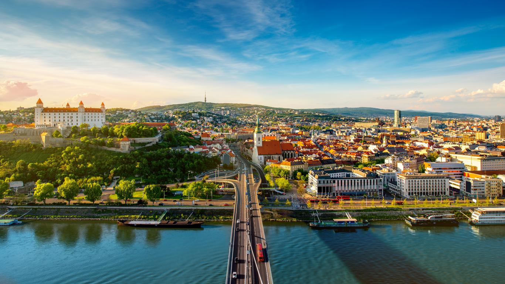

Parque Nacional de Krka, Croácia
O Parque Nacional de Krka, na Croácia, é famoso por suas deslumbrantes cachoeiras e paisagens naturais. As quedas d'água de Skradinski Buk e Roški Slap são atrações imperdíveis para os amantes da natureza.
Liubliana, Eslovênia
Liubliana, a capital da Eslovênia, é uma cidade charmosa com uma rica herança cultural. O Castelo de Liubliana, que oferece vistas panorâmicas da cidade, e o Tromostovje (Tripla Ponte) são alguns dos destaques locais.
Bratislava, Eslováquia
Bratislava, situada às margens do rio Danúbio, é conhecida por seu centro histórico encantador. Visite o Castelo de Bratislava e explore as ruas pitorescas repletas de cafés e lojas.
Mostar, Bósnia e Herzegovina
Mostar é uma cidade histórica famosa pela Ponte Velha (Stari Most), um símbolo de reconciliação e paz. A arquitetura otomana e as belas paisagens ao redor do rio Neretva fazem de Mostar um destino único.